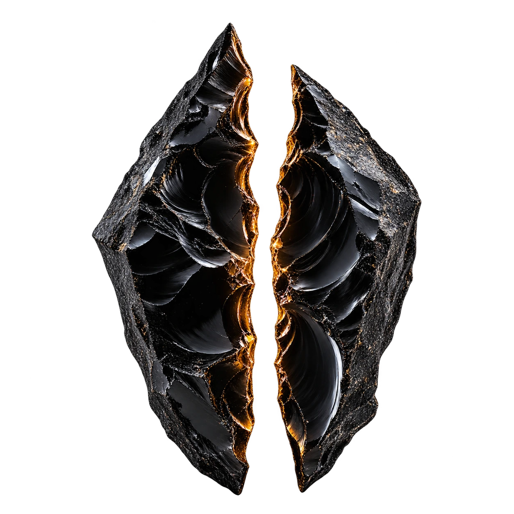

Всё началось с осколка обсидиана. В тёмном камне парфюмер увидел тёплый свет.
Он собрал его из амбры, сухого дерева и тихого дыма. Так появился OBSIDIAN.
Первый аромат хранил тепло камня на закате. За ним родились ещё восемь — девять способов сохранить свет.